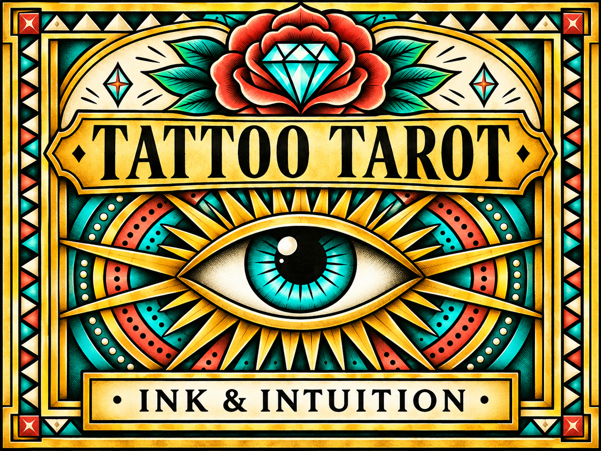

Tattoo Tarot · Ink & Intuition
Learn Tarot
Your deck. Your intuition. One card at a time.
Featured Cards
Take your deck anywhere
Save both decks and study tools for use without Wi-Fi or mobile data.
First download for both decks needs a connection and about 160 MB of free space. Browser storage must be kept for offline access.
Add to your home screen
iPhone: open in Safari → Share → Add to Home Screen. Android: open in Chrome → menu → Install app or Add to Home screen. Open the home-screen app once online and check that it says “Saved for offline study.”
Your Journey
Your learning journey
Small steps become second nature.
Your progress stays on this device.
All learning progress is saved only in this browser. No account, tracking, or cloud sync.
Explore the full deck
Card Library
Get to know your deck, one upright card at a time.
One card at a time
Study Mode
Look at the artwork and recall its meaning. Flip to check your answer, then mark it learned when you’re ready.
What does this card mean upright? Flip to check your answer.
Know your deck from the ground up
Suit, Arcana & Numerology Academy
Explore your deck’s 22 Major and 56 Minor Arcana, the four suits, Knaves and other court cards, and numerology. Card meanings follow the supplied Ink & Intuition deck materials; broader associations are labeled as study conventions.
Quick knowledge check
Mini Test
Practice makes intuitive
Meaning Quiz
Choose the card that matches the upright meaning. A new question appears after each answer.